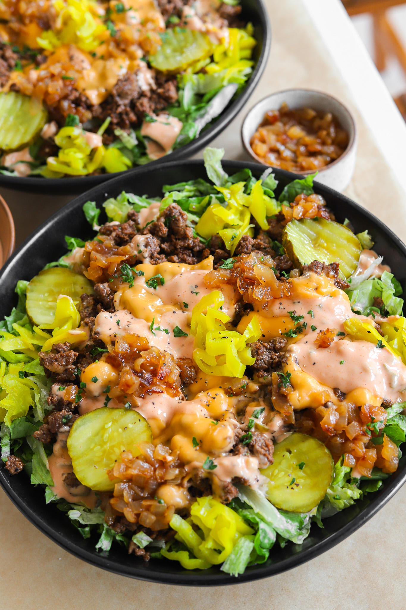

Recipe Page Exercise
DINNER | MAIN COURSE
BURGER SALAD
PREP TIME: 10 MINUTES
COOK TIME: 35 MINUTES
TOTAL TIME: 45 MINUTES
YIELDS: 2 to 3
Craving all the flavors of a classic
burger but want something a little lighter?
This burger salad is the ultimate combo of
juicy, cheesy beef, tangy pickles, and
crisp veggies, all tossed in a delicious
homemade sauce. It’s everything you love
about a burger, minus the bun!
INGRIDENTS
BURGER SAUCE
- 1/3 cup mayonnaise
- 4 tablespoons pickle relish, drained
- 1/4 teaspoon salt
- 4 tablespoons water
GROUND BEEF
- 1 tablespoon unsalted butter or avocado oil
- 1 pound 90/10 ground beef
- 3/4 teaspoon salt, add to taste
- 1/4 teaspoon black pepper
- 1/2 tablespoon Worcestershire sauce
- 1/4 cup beef broth
- 1 teaspoon yellow mustard
- 4 slices American cheese slices
VEGGIES
- 4 to 5 cups shredded lettuce
- 1/4 cup dill pickle slice
- 1/4 cup pepperoncinis, chopped
- 1 tablespoon chopped parsley
INSTRUCTION
BURGER SAUCE:
- In a small bowl, mix together mayonnaise,
pickle relish, ketchup, and sugar.
- Stir until smooth and set aside.
CARAMELIZED ONIONS:
- Heat some vegetable oil in a pan over medium heat.
- Add finely diced onion and a pinch of salt.
- Stir occasionally and cook until golden and soft.
- Add water, a tablespoon at a time, if onions start to stick,
until fully caramelized. Remove from heat.
GROUND BEEF:
- In a large skillet, melt some butter over medium-high heat.
- Add ground beef, season with salt and pepper.
- Stir in Worcestershire sauce, beef broth, and yellow mustard.
- Cook, breaking up the beef, until browned. Divide the
beef into portions, top with American cheese slices, and
let the cheese melt. Remove from heat.
SALAD ASSEMBLY:
- In a large bowl, layer shredded lettuce at the bottom.
- Add the cooked ground beef on top of the lettuce.
- Scatter dill pickle slices, chopped pepperoncinis, parsley,
and the caramelized onions over the beef.
- Drizzle with the prepared burger sauce and toss everything
together right before serving.